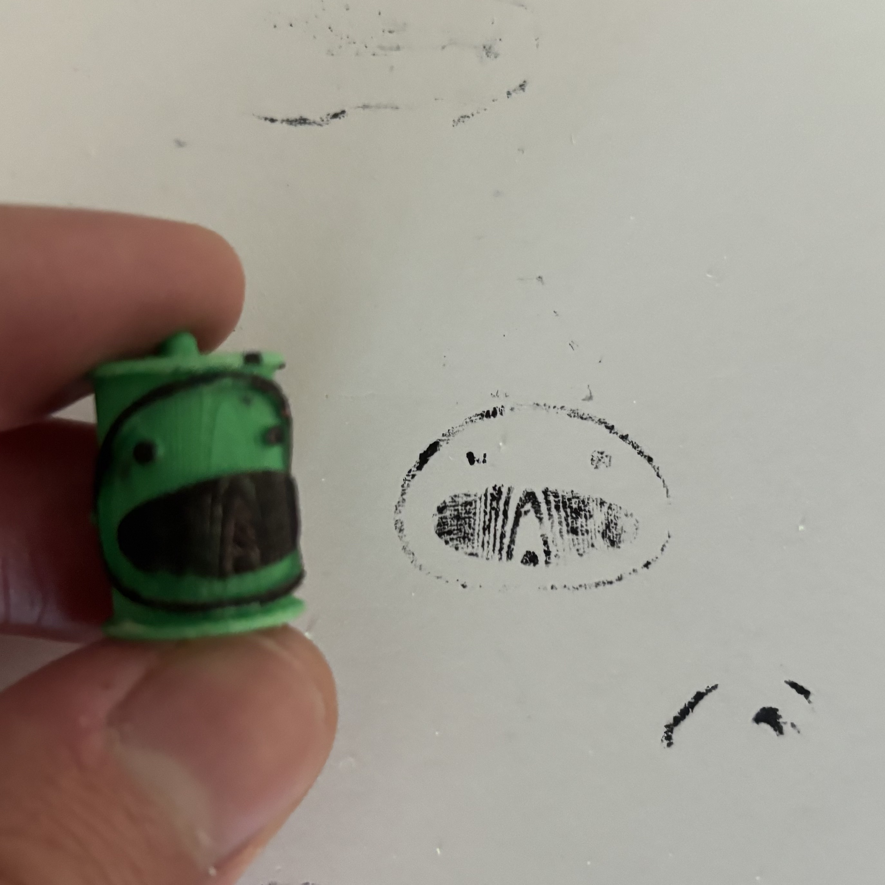
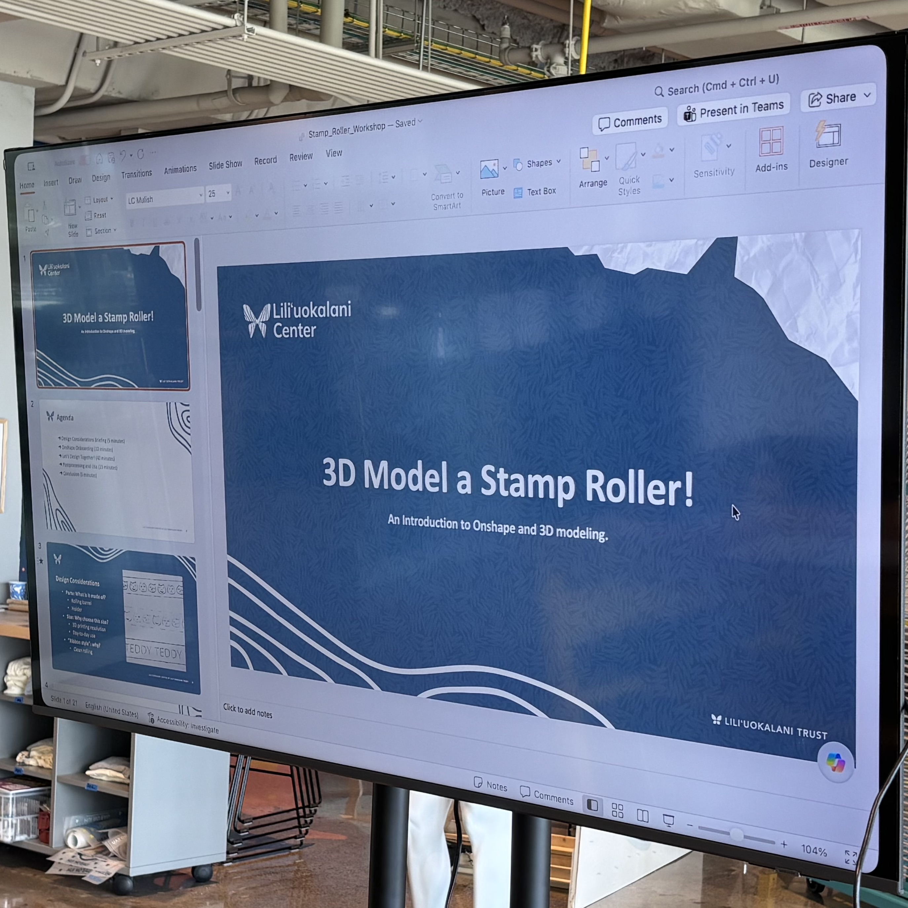
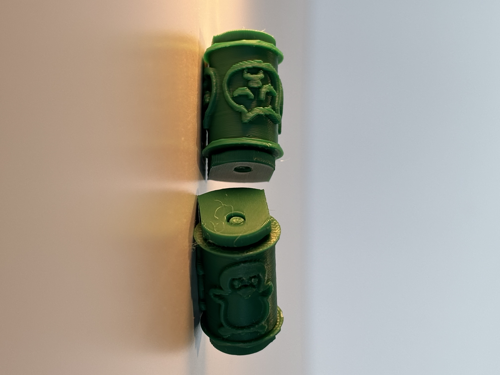
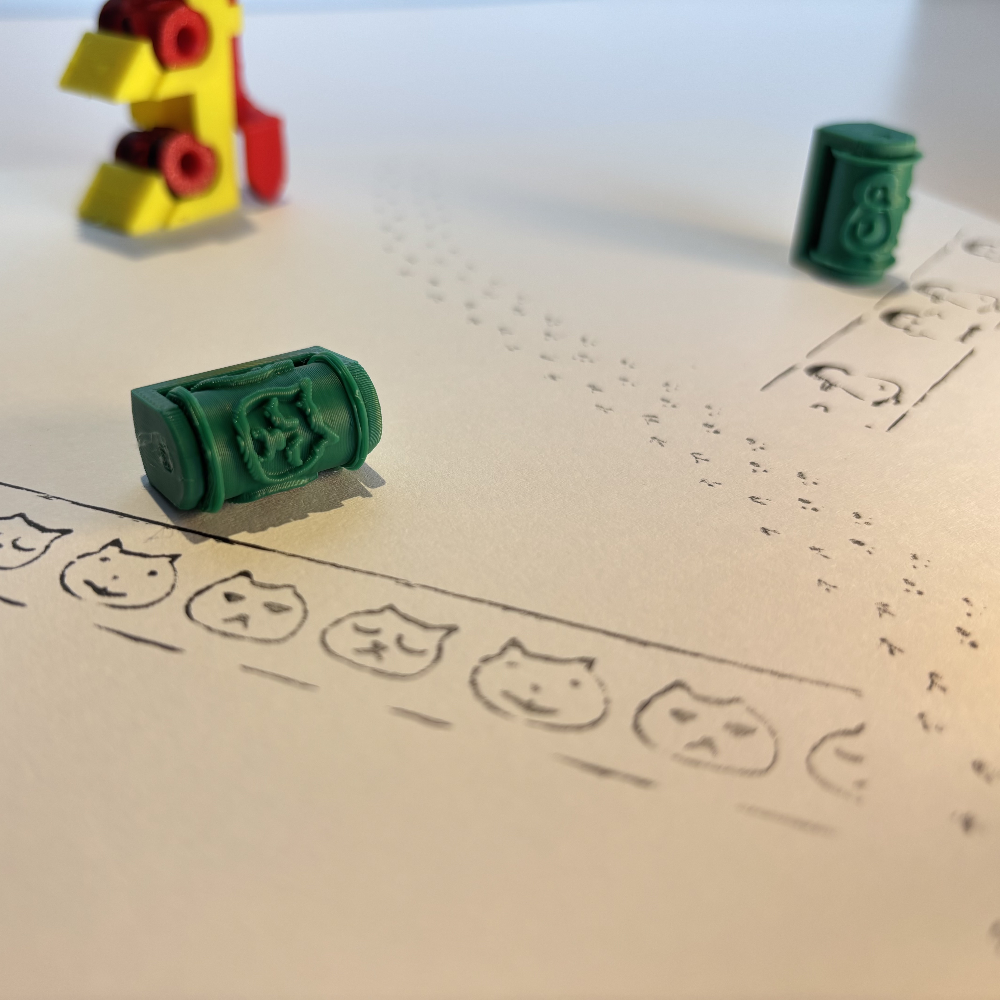
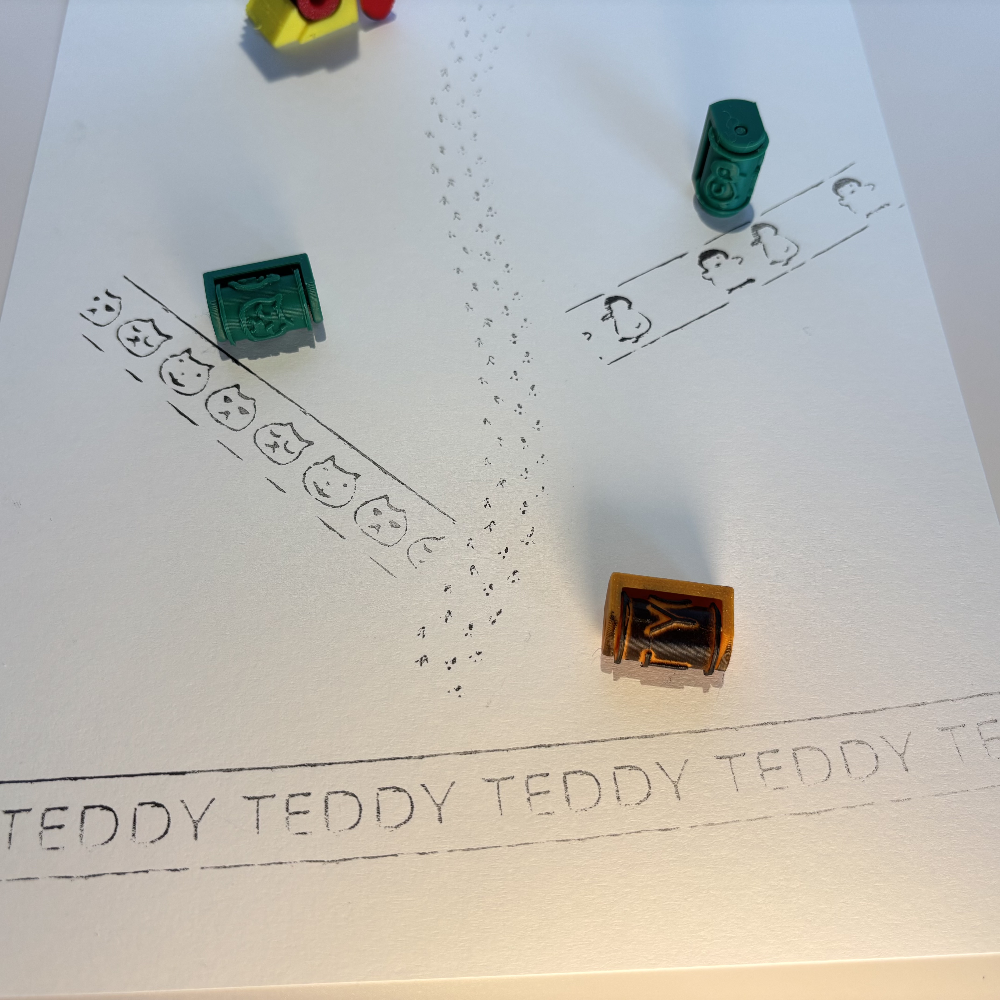

Design a compact stamp roller that is fast to print and teaches the fundamental tools of 3D design and fabrication to young learners.
⚙ Onshape
⚙ BambuLab X1C 3D Printer
⚙ Presentation Design
⚙ Rapid Prototyping
The activity and presentation were designed over a 2-week period during my makerspace internship at the Lili'uokalani Center.
Concept
Capstone
My internship capstone project was to organize a hands-on activity that would teach kids the fundamentals of 3D design. I aimed for something customizable; something that, above all, would convince the audience that making their own things is fun and accessible.

Recipe
Recipe
The mini stamp roller was designed in Onshape, then 3D printed on a BambuLab X1C. After lengthy experimentation with size, surface texture, ink type, and rolling surface, I settled on a design that permits complex stamp patterns but keeps print time and expenses low.

Feedback
Feedback
The presentation and activity were well received by the audience. Handling pace and keeping the group on the same page was a challenge, but I am confident that I can improve the workshop experience through better organization and practice.



